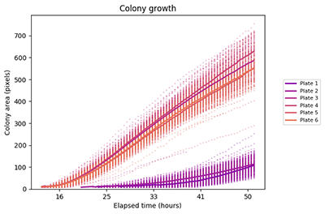
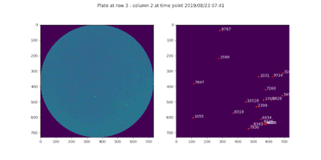

ColonyScanalyser
 An image analysis tool for measuring microorganism colony growth. ColonyScanalyser will analyse and collate statistical data from agar plate images. It provides fast, high-throughput image processing.
ColonyScanalyser can provide information on:
- Colony appearance time
- Colony growth over time
- Growth and appearance time distribution
- Colony colour (e.g. staining or other visual indicator)
Install
pip install colonyscanalyser
Full installation instructions.
Run
scanalyser /path/to/images
See the quick start guide for more information on getting up and running with ColonyScanalyser.

Image requirements
ColonyScanalyser is suitable for analysing series of images from a fixed point that show the development of microorganism colonies over time. The image specifications page has more detail on image requirements.
Several image plots will be output after analysis is complete to enable quick verification of the data. A complete set of data is provided in CSV format for further study.
License
This project is licensed under the GPLv3 - see the license page for details